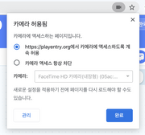

인공지능 블록 > AI 활용 - 비디오 감지
AI 블록 > 비디오 감지
카메라로 입력되는 이미지(영상)을 통해 얼굴/사람(신체)/사물을 인식하는 블록입니다. 카메라에 여러분 스스로를 비춰보고 얼굴 표정, 몸 동작, 다양한 사물을 인공지능이 어떻게 자동으로 감지하고 인식하는지 경험할 수 있어요!
비디오 감지 블록은 Internet Explorer와 iOS에서는 동작하지 않습니다.
(안정적인 동작을 위해 크롬을 사용해주세요.)비디오 감지 블록은 카메라 연결이 필요한 블록입니다. 데스크탑의 경우 별도 웹캠을 연결해주세요.
카메라를 연결했는데도 블록이 동작하지 않거나, 영상이 제대로 입력되지 않는 경우 인터넷 브라우저의 설정을 변경해 카메라 사용을 허용해주세요.
(크롬의 경우, 주소 표시줄 오른쪽의 카메라 아이콘을 클릭하거나 ‘설정 > 개인정보 및 보안 > 사이트 설정 > 카메라’ 에서 엔트리 사이트의 카메라 사용을 허용해 주세요.) 
※ 카메라를 통해 입력되는 영상은 절대로 서버에 저장되거나 외부로 공유되지 않습니다.
- 비디오 감지 블록은 처음 작동할 때 마다 별도의 로딩이 필요합니다. 약 30초에서 1분 가량 로딩하면 블록을 사용할 수 있어요. 로딩 시간은 컴퓨터 사양, 네트워크 상태에 따라 달라질 수 있습니다. 새로 고침하거나 다시 접속하는 경우 로딩은 다시 진행됩니다.
- 비디오 감지 블록을 반복 블록 안에 넣으면 작품이 많이 느려질 수 있으니 주의해 주세요!
아래는 인공지능 블록에서 선택할 수 있는 인식 모델입니다.
사람: 신체의 각 부위를 인식할 수 있는 모델입니다. 인식할 수 있는 부위는 아래와 같습니다.얼굴,목,왼쪽 눈,오른쪽 눈,왼쪽 귀,오른쪽 귀,왼쪽 어깨,오른쪽 어깨,왼쪽 팔꿈치,오른쪽 팔꿈치,왼쪽 손목,오른쪽 손목,왼쪽 엉덩이,오른쪽 엉덩이,왼쪽 무릎,오른쪽 무릎,왼쪽 발목,오른쪽 발목
얼굴: 얼굴의 각 부위를 인식할 수 있는 모델입니다. 인식할 수 있는 부위는 아래와 같습니다.왼쪽 눈,오른쪽 눈,코,왼쪽 입꼬리,오른쪽 입꼬리,윗 입술,아랫 입술
사물: 미리 지정된 80개의 사물을 인식할 수 있는 모델입니다. 인식할 수 있는 사물은 아래와 같습니다.사람,자전거,자동차,오토바이,비행기,버스,기차,트럭,보트,신호등,소화전,정지 표지판,주차 미터기,벤치,새,고양이,개,말,양,소,코끼리,곰,얼룩말,기린,배낭,우산,핸드백,넥타이,여행 가방,원반,스키,스노보드,공,연,야구 배트,야구 글러브,스케이트보드,서프보드,테니스 라켓,병,와인잔,컵,포크,나이프,숟가락,그릇,바나나,사과,샌드위치,오렌지,브로콜리,당근,핫도그,피자,도넛,케이크,의자,소파,화분,침대,식탁,변기,텔레비전,노트북,마우스,리모컨,키보드,핸드폰,전자레인지,오븐,토스터,싱크대,냉장고,책,시계,꽃병,가위,테디베어,헤어드라이어,칫솔
1. 비디오 화면 [보이기]

카메라가 촬영하는 화면(앞으로 ‘비디오 화면’이라고 부를게요)을 실행화면에서 보이거나 숨깁니다.
목록 상자( )를 클릭하면 보일지 숨길지 고를 수 있어요.
)를 클릭하면 보일지 숨길지 고를 수 있어요.
2. <비디오가 연결되었는가?>

기기에 카메라가 연결되어 있다면 참으로, 아니라면 거짓으로 판단하는 블록입니다.
3. 비디오 화면 [좌우] 뒤집기

비디오 화면을 실행 화면에서 좌우(가로) 또는 상하(세로)로 뒤집습니다.
기본 화면은 거울을 보는 것처럼 좌우로 뒤집어져 있어요.
목록 상자( )를 클릭하면 뒤집을 방향을 선택할 수 있어요.
)를 클릭하면 뒤집을 방향을 선택할 수 있어요.
4. 비디오 투명도 효과를 (0) 으로 정하기

비디오 화면의 투명도 효과를 입력한 숫자로 정합니다. 0%~100% 범위에서 조절할 수 있어요.
이 블록을 사용하지 않았을 때 기본 투명도 효과는 50%입니다.
5. [자신] 에서 감지한 [움직임] 값

비디오 화면에서 오브젝트나 실행 화면이 감지한 움직임 정도를 가져오는 값 블록입니다.
목록 상자( )를 클릭하면 감지할 대상과 감지할 값을 선택할 수 있어요.
)를 클릭하면 감지할 대상과 감지할 값을 선택할 수 있어요.
- 감지할 대상 (첫 번째 목록 상자)
자신: 해당 오브젝트에서 움직임을 감지합니다.실행 화면: 촬영하는 전체 화면에서 움직임을 감지합니다.
- 감지할 값 (두 번째 목록 상자)
움직임: 움직임이 작고 느릴수록 0 에 가깝고, 크고 많을수록 큰 수를 가져옵니다.방향: 오른쪽 또는 위쪽으로 움직일수록 양수로 커지고, 왼쪽 또는 아래쪽으로 움직일수록 음수로 커지는 수를 가져옵니다.
6. [사람] 인식 [시작하기]

모델 인식을 시작하거나 중지합니다.
모델을 인식하려면 꼭 이 블록을 통해 인식을 시작해야 해요.
첫 번째 목록 상자( )를 클릭하면 인식할 모델을 선택할 수 있고 두 번째 목록 상자(
)를 클릭하면 인식할 모델을 선택할 수 있고 두 번째 목록 상자( )를 클릭하면 인식을 시작할지 중지할지 선택할 수 있어요.
)를 클릭하면 인식을 시작할지 중지할지 선택할 수 있어요.
7. <[사람] 인식이 되었는가?>

모델을 인식했다면 참으로, 아니라면 거짓으로 판단하는 블록입니다.
선택한 모델의 인식을 시작하지 않았다면 항상 거짓으로 판단해요.
목록 상자( )를 클릭하면 인식여부를 확인할 모델을 선택할 수 있어요.
)를 클릭하면 인식여부를 확인할 모델을 선택할 수 있어요.
8. <사물 중 [사람] (이)가 인식되었는가?>

선택한 사물을 인식했다면 참으로, 아니라면 거짓으로 판단하는 블록입니다.
목록 상자( )를 클릭하면 인식여부를 확인할 사물을 선택할 수 있어요.
)를 클릭하면 인식여부를 확인할 사물을 선택할 수 있어요.
9. 인식된 [사람] 의 수

모델을 인식한 수를 가져오는 값 블록입니다.
목록 상자( )를 클릭하면 인식한 수를 가져올 모델을 선택할 수 있어요.
)를 클릭하면 인식한 수를 가져올 모델을 선택할 수 있어요.
10. 인식된 [사람] [보이기]

인식한 모델을 실행 화면에서 보이거나 숨깁니다.
‘보이기’를 선택하면 모델이 인식한 대상을 빨간색 상자와 인식한 이름으로 표시해요.
첫 번째 목록 상자( )를 클릭하면 인식할 모델을 선택할 수 있고, 두 번째 목록 상자 (
)를 클릭하면 인식할 모델을 선택할 수 있고, 두 번째 목록 상자 ( )를 클릭하면 그것을 보일지 숨길지 고를 수 있어요.
)를 클릭하면 그것을 보일지 숨길지 고를 수 있어요.
11. [1] 번째 사람의 [얼굴] 의 [x] 좌표

신체 부위의 x 또는 y 좌표를 가져오는 값 블록입니다.
사람을 인식하지 않을 때는 0 을 가져와요.
목록 상자( )를 클릭하면 인식한 해당 순서의 사람과 신체 부위를 선택할 수 있어요.
)를 클릭하면 인식한 해당 순서의 사람과 신체 부위를 선택할 수 있어요.
12. [1] 번째 얼굴의 [왼쪽 눈] 의 [x] 좌표

얼굴 부위의 x 또는 y 좌표를 가져오는 값 블록입니다.
얼굴을 인식하지 않을 때는 0 을 가져와요.
목록 상자( )를 클릭하면 인식한 해당 순서의 얼굴과 부위를 선택할 수 있어요.
)를 클릭하면 인식한 해당 순서의 얼굴과 부위를 선택할 수 있어요.
13. [1] 번째 얼굴의 [성별]

얼굴의 특징을 가져오는 값 블록입니다.
얼굴의 특징을 가져오려면 꼭 얼굴 인식을 시작한 상태여야 해요. 얼굴을 인식하지 않을 때는 0 을 가져와요.
목록 상자( )를 클릭하면 인식한 해당 순서의 얼굴과 그 얼굴의 성별/나이/감정을 선택할 수 있어요.
)를 클릭하면 인식한 해당 순서의 얼굴과 그 얼굴의 성별/나이/감정을 선택할 수 있어요.